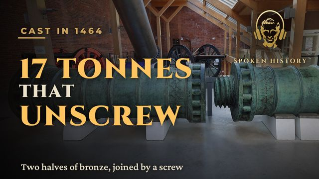
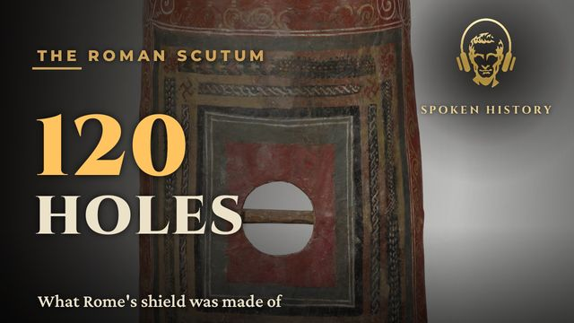

16
Domesday Book: Why Was It Made?
- Script
- Images
- Animation
- Article
- Fact-check
- Narration
- Render
- Review
- Release
 Premiere soon
Premiere soonThe Battle of Hattin, 4 July 1187, from the sources on both sides: Saladin's words to his son, "until that tent falls"; Reynald of Chatillon's attack on a caravan during a truce; Tiberias...
Read the story Premiere soon
Premiere soonThe Battle of Ain Jalut, 1260, from the sources on both sides: a captured Mongol general's last words, as a Persian history written for the Mongol court gives them; Hulegu's advance into...
Read the story Premiere soon
Premiere soonThe Lewis chessmen, 93 pieces of walrus ivory and whale tooth found on the Isle of Lewis in 1831: 78 chessmen from at least four sets, 14 discs for another board game and a buckle; the find...
Read the story
Krak des Chevaliers in Syria, the crusader castle that UNESCO's listing takes as the best preserved example of its period (its own summary says among the best preserved): the fortress of...
Read the story
How knight's armour went from mail to plate, from the evidence: the mass graves of the Battle of Visby, 1361, where many of the dead were buried still wearing their armour, old mail hoods...
Read the story Premiere soon
Premiere soonWhat sank Kublai Khan's fleet in the Mongol invasions of Japan, from the evidence: a famous scroll picture of a bomb bursting beside a samurai's horse, which the historian Thomas Conlan...
Read the story
The Dardanelles Gun, a bronze bombard cast in 1464 for Sultan Mehmed II, in two halves of about seventeen tonnes that unscrew: the unscrewing on the beach at Chanak in 1868 (nearly 40 tons...
Read the story
What the Bayeux Tapestry really shows, read scene by scene and checked against the written sources. It is an embroidery, not a tapestry: dyed wool on nine pieces of linen, 68.3 metres long...
Read the story
What was the Roman scutum made of? Polybius describes a double layer of boards glued with bull-hide glue, linen, calfskin, iron edging and an iron boss; the shield from Tower 19 at...
Read the story
How the trebuchet really worked, from the sources: the Warwolf at Stirling in 1304, where Edward I made a surrendered castle wait until it was struck; the two machines behind one name, a...
Read the story
How a medieval castle was built, told through one castle's paperwork: Beaumaris on Anglesey, begun for Edward I in 1295 and never finished. The letter of 27 February 1296 to the Exchequer...
Read the story
Was the Roman pilum designed to bend? Caesar reports the iron bent in the Helvetii's shields in 58 B.C. but not why; Polybius gives the famous bending javelin to the light troops and says...
Read the story
Vindolanda, just south of Hadrian's Wall, is not one Roman fort but many, built one on top of another from about A.D. 85. The textbook plan of a fort and what the ancient texts really say...
Read the story
Hadrian's Wall: eighty Roman miles of stone and turf from the Tyne to the Solway. Only one ancient sentence credits Hadrian; the proof is in the stones: RIB 1638 naming Hadrian and...
Read the story
Roman lead sling bullets, the glandes: how they were cast, what the inscribed bullets from Octavian's siege of Perusia (41 to 40 B.C.) say, the disputed story of three hundred sacrificed at...
Read the story
In 1964 a training dig at Corbridge, close to Hadrian's Wall, found a chest buried under a floor with twelve unmatched sections of Roman plate armour. What the lorica segmentata was, why...
Read the story
Caesar writes that at the Sabis in 57 B.C. his men had no time even to put on their helmets. What were Roman helmets really? The modern type names (Montefortino, Coolus, Hagenau, Weisenau...
Read the story
Livy says Philip V's soldiers were horrified by the wounds of the Spanish sword. What was the Roman gladius, really? The origin story in the Suda and the dispute over when and from whom...
Read the story
A coin struck by Caesar's killers shows two daggers. The pugio, Rome's short dagger, appears in the stories of Caesar, Scaevinus, Arria and Sertorius, none of them a battle. What museums...
Read the story
A one-armed Roman stone-thrower, named after a wild ass, shook Persian siege towers apart at Amida in A.D. 359. How it worked, how it was crewed and carried, what it really did, and what...
Read the story
A few centimetres of iron with four spikes, so shaped that one point always stands up. What the Romans called it, the story of buried caltrops at Gaugamela that only Curtius tells, Vegetius...
Read the story
A Gaulish warrior on a burning wall is hit by a bolt from a machine he never saw. The Roman scorpion was a torsion bolt-shooter powered by twisted sinew and hair. How it worked, who built...
Read the storyNo episode matches. Widen the period or clear the search.
Episodes in the order of the events they tell
No episode matches the filters above.
Every place that appears in an episode
No place matches the filters above.
The subjects that come up most often, and every other topic from A to Z. Each one leads to the episodes and articles that cover it.
Topics that appear in more than one episode
Nothing here is rushed. Each episode passes the same nine steps before it is released. 60 further topics are researched and waiting. Updated 21 November 2026, 12:20 (Berlin time).
Primary sources, excavation reports and named scholars are read first. Every sentence is written down with its source.
Only images from the right time and place, with free licences and a credit for each one.
Drawn to match the evidence, not the movies. Reconstructions are labelled as such.
The story as a page you can read, with the sources and image credits.
A different reader checks every sentence, number and picture against the sources.
The script is narrated line by line and checked by ear.
Picture, music and narration are put together and measured.
The finished video is checked frame by frame for pace, text size and mistakes.
The episode is published together with its article.